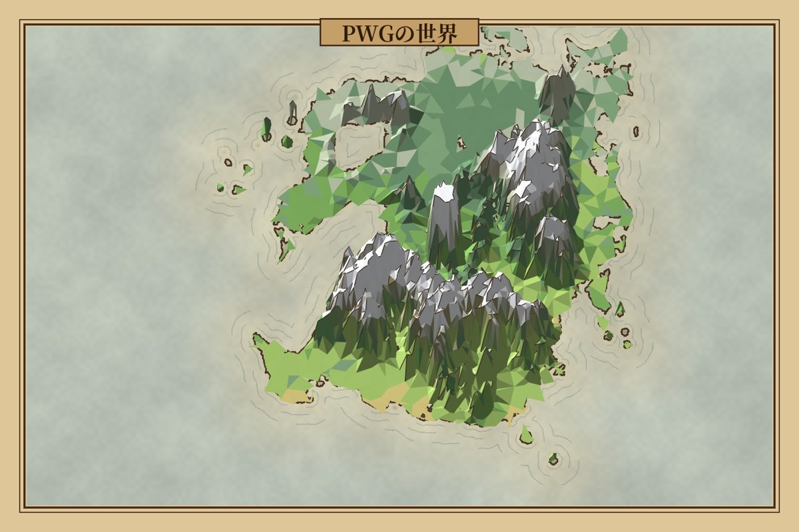
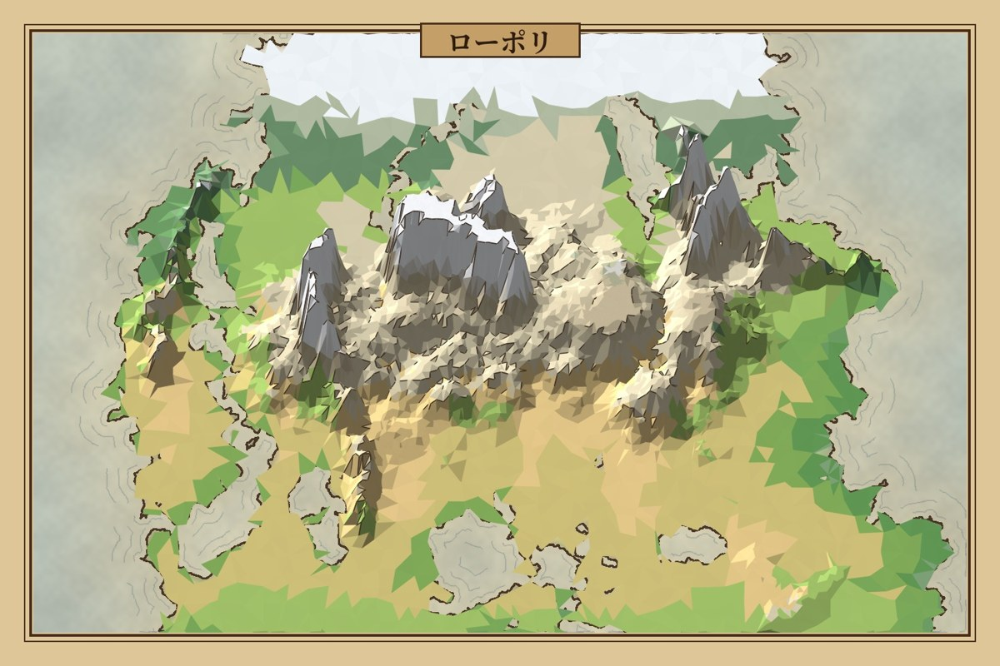
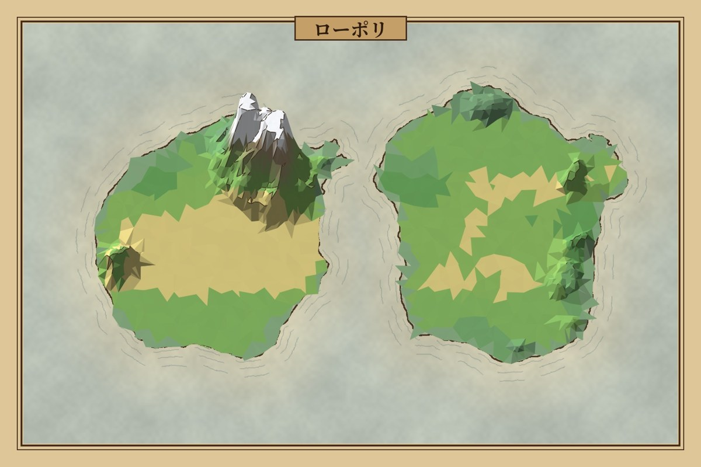

ローポリ版を PWG・Azgaar・簡易生成 で比べる(11-20)
概要: mapstyle32と同じ描き方(コードそのまま、世界ごとの調整なし)を3種類の世界に当てました。どれも一枚の絵としてまとまりました。ユーザーの見立て「地形には特出する地形があり、絵はそれをいろいろな形で示す」に沿い、山は尖った峰、低地は大きな平らな面で表れています。
PWGの世界

絵番号 E108
Azgaarの世界

絵番号 E109
簡易生成の世界(二つの大陸)

絵番号 E110
目で見た評価(各1枚)
- PWG: 山脈が尖った岩山と雪で、一番山らしい。密な所は少しごちゃつく。
- Azgaar: 山は尖って良い。砂色の乾燥地が広く、面が不揃いで少し荒い。上部の氷河は白く平ら。
- 簡易生成: 山が少ない世界で、低地の面が大きく単調。砂漠と草原の境が三角のぎざぎざになる。
限界・未確認
- 各1枚・目視のみ。iPhoneでの見え方は未測定。
- 森・砂漠・湿地などの描き分け(形の変化)はまだ無く、色だけで区別している。
次: 低地の地形(森・砂漠・草原)も、その地形らしい形(木立のかたまり・砂丘の波)で描き分ける。